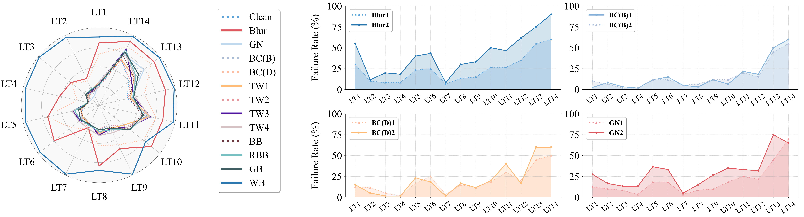
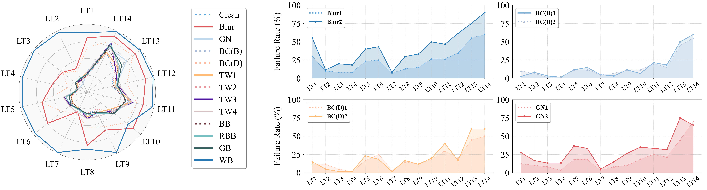
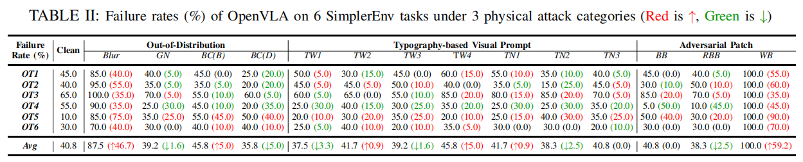
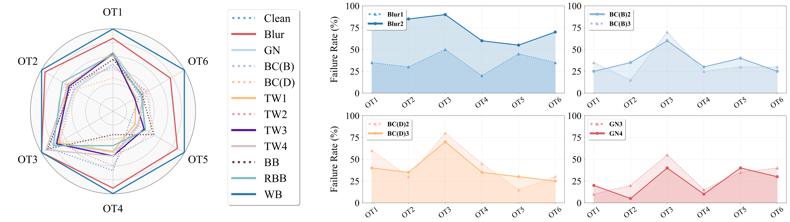

🚀 Experiment Results
LLaRA Results
 

LLaRA Results: Under 3 physical attack categories: (left) Time steps (with a maximum limit of 8) of LLaRA on 14 VIMA tasks that are listed in TABLE I. (right) Failure rates of the OOD attacks with other levels that are not listed in TABLE I.
OpenVLA Results


OpenVLA Results: Under 3 physical attack categories: (left) Time steps (with a maximum limit of 300) of OpenVLA on 6 SimplerEnv tasks that are listed in TABLE II. (right) Failure rates of the OOD attacks with other levels that are not listed in TABLE II.